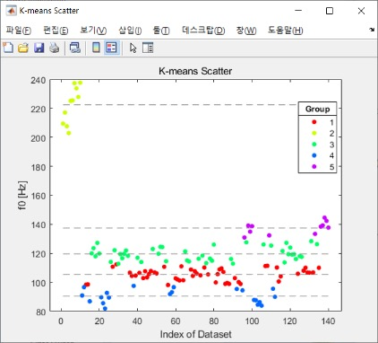

|
데이터로 문제를 해결하는 개발자 안민혁
안녕하세요! 신입 개발자 안민혁입니다. |

|
프로젝트 |

|
ProtoPrompt: Multi-perspective Prompt Optimization via Prototypical Feedback
안민혁 (리더), 강태훈, 변해린, 조성배 Preprint Paper / Code
Large Language Models Automatic Prompt Optimization Black-box Optimization LLM Agents Dialogue & Interactive Systems Monte Carlo Tree Search Information Extraction |
|
|
Adaptive Fusion of Global-to-Local Patterns for Graph Representation
Learning
안민혁, 조성배 Preprint Paper / Code
Graph Neural Networks Neural ODEs Representation Learning |
|
|
Graph Representation Learning with Laplacian Pyramid Residual for Graph
Classification
김태환, 강태훈, 안민혁, 조성배 Preprint
Graph Neural Networks Graph Classification |
|
|
Adaptive Prototype Augmentation for Class Incremental Learning
안민혁, 문형준, 조성배 Preprint
Continual Learning Feature Extraction Knowledge Distillation |

|
Samsung AI Challenge : Camera-Invariant Domain Adaptation
안민혁 (리더), 손기훈 경진대회 (랭킹 30/211), (2023.08.21 — 2023.10.02) Code
Domain Adaptation Semantic Segmentation Semi-Supervised Learning Pseudo-Labeling Adaptive Cutmix |

|
Crowd Counting Using Diffusion-Based Latent Space
손기훈, 안민혁 (리더), 이시원 졸업 프로젝트 (지도교수: 홍성은), (2023.03 — 2023.08) Paper / Poster / Code
Crowd Counting Diffusion Models Conditional Image Generation Latent Space Denoising Diffusion Probabilistic Models |
|
|
CNN 성능 향상을 위한 방법론 탐색
안민혁 토이 프로젝트, (2022.09 — 2022.12) Report / Code
Knowledge Distillation Learning Rate Scheduling Label Smoothing Mixup Augmentation ResNet |

|
클래스 불균형 완화를 위한 자동 데이터 합성
안민혁 토이 프로젝트, (2022.09 — 2022.12) Report1 / Report2
Class Imbalance Data Synthesis Data Augmentation Semantic Segmentation Data Sampling |

|
자율주행 환경에서의 3차원 객체 탐지
안민혁 외 13인 경진대회, (2021.09 — 2022.11) Demo / Report / Note1 / Note2
Autonomous Vehicles 3D Object Detection Camera-LiDAR Fusion TensorRT ROS |
|

|
Speech Classification for Gender and Speaker Identification
안민혁 (리더) 외 2인 팀 프로젝트, (2021.11 — 2021.12) Report
Audio Processing Feature Extraction Audio Classification K-means Clustering |
연구 과제
지속 가능한 협업형 멀티 모달 평생 학습 프레임워크 개발 (2023.12 — 2024.12)
그래프 데이터로부터 생활패턴 발견기술 연구 (2023.09 — 2023.11)
상용 자율주행차 주행 데이터 (2022.05)
다학년연구프로젝트 (2021.09 — 2022.12)
|
특허교사 모델을 이용한 지식 증류 방법 및 장치 (10-2024-0141487) (출원, 2024.10) |
수상/경험
Fundamentals of Accelerated Data Science 교육 (2025.03.26)
2024 한국데이터마이닝학회 (KDMS) 포스터 발표 (2024.11.22 — 2024.11.23)
프로그래밍언어구조론 조교 (2024.09 — 2024.12)
공학교육인증 이수 (ABEEK) (2018.03 — 2023.08)
H-Mobility Class 교육 수강 (2023.01.02 — 2023.01.27)
성적 우수 장학생 선발 (2022-2학기)
연구프로젝트 성과발표회 대상 (2022.12)
Future Mobility Urban Challenge 참가상 (2022.11)
국제 대학생 창작 자동차 경진대회 참가 (2022.10)
연구프로젝트 성과발표회 대상 (2022.01)
학부연구생 (연구실 인턴) (2021.12 — 2022.05)
대한민국 육군 (2020.02 — 2021.08)
성적 우수 장학생 선발 (2018-1학기)
|
학력
연세대학교 (2023.09 — 2025.08)
인하대학교 (2018.03 — 2023.08)
|
SkillsProgramming Languages: Python Libraries and Tools: Pytorch / NumPy / OpenCV / PyG / NetworkX / Pandas / Matplotlib / WandB / Tensorboard Operating Systems: Linux |